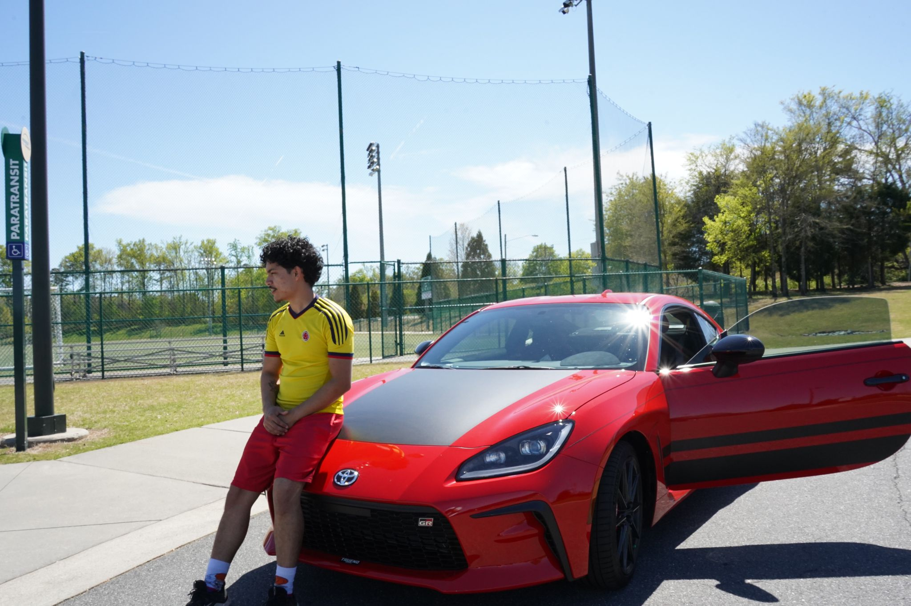

Me infront of my Brand new Toyota GR-86 Trueno Edition
Personal Background: I am originally from Medellin, Colombia.
Professional Background: I have experience working as a website designer, social media manager, sales associate, amazon packager, and most recently as an HVAC install helper.
Academic Background: Recent readmit student in Senior year of pursing Computer Science, Information Technology degree
Primary Computer Platform: ROG Zephyrus Windows 11